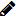

Altera a palavra-passe introduzida ao iniciar o cotodesign Template e o cotodesign Order Viewer.
Para aumentar a segurança, altere periodicamente a palavra-passe.
Lista de Template e Lista de Print Layout |
Estas são as listas de "Template" e "Template" registados no cotodesign.
Botões no canto superior direito do ecrã

Altera a palavra-passe introduzida ao iniciar o cotodesign Template e o cotodesign Order Viewer.
Para aumentar a segurança, altere periodicamente a palavra-passe.

Apresenta o ficheiro de ajuda online.
IDIOMA

Modifica o idioma do ecrã.
Lista de Template

Cria um novo modelo.
• Item relacionado >> Determinar o Tamanho e o Método de Impressão de um Modelo

Edita o modelo.

Importa um ficheiro SVG e adiciona um novo modelo.
Para as especificações de ficheiro SVG, consulte o "Guia de instalação cotodesign".

Apresenta a pré-visualização do modelo.
Não é possível alterar as configurações.

Apaga o modelo.

Importa um ficheiro de modelo e carrega-o no servidor.

Guarda o modelo selecionado.

Introduza uma parte de um nome de modelo para filtrar os ficheiros de modelo exibidos na lista de modelos.
NOME
Apresenta o nome de ficheiro do modelo registado.
Os nomes de ficheiros de modelo estão sujeitos a regras de nomenclatura e indicam uma configuração de camadas separadas por pontos.
TIPO DE IMPRESSÃO
Ao imprimir numa impressora, selecione "Impressão a Cores". Quando utilizar um decorador de folha a laser, selecione "Impressão da película". Quando utilizar uma impressora de metais, selecione "Impressão em Metais". Ao usar uma máquina de corte, escolha "Corte".
Clique em "▼" e selecione "TIPO DE IMPRESSÃO" para filtrar os ficheiros de modelo que são exibidos na lista de modelos.
EFEITO ESPECIAL
Quando "COR ESP." é utilizado para criar um ficheiro de modelo, é exibido um ícone correspondente ao efeito especial.
Lista de Print Layout

Cria um novo layout de impressão.
Altera as configurações de layout de impressão.

Importa um ficheiro SVG e adiciona um novo layout de impressão.
Para as especificações de ficheiro SVG, consulte o "Guia de instalação cotodesign".

Apresenta a pré-visualização do layout de impressão.
Não é possível alterar as configurações.

Apaga o layout de impressão.

Importa o ficheiro de layout de impressão e carrega-o no servidor.

Guarda o layout de impressão selecionado.
LIGAR
Seleciona o layout de impressão no qual posicionar o modelo.
Cada modelo exige pelo menos um layout de impressão para o respetivo destino de posicionamento. Modelos que não tenham sido colocados em um layout de impressão não podem ser impressos.
É possível selecionar vários layouts de impressão para os destinos de posicionamento de um único modelo. No entanto, os modelos e planos de impressão só podem ser combinados se tiverem o mesmo tipo de impressão. Por exemplo, modelos dedicados a uso com impressão a cores apenas podem ser associados a planos de impressão com impressão a cores. Utilize o cotodesign Print Manager para definir os layouts de impressão nos quais aplicar os modelos encomendados.
PADRÃO
Seleciona o layout de impressão em que os modelos são automaticamente posicionados quando a caixa de verificação [Plano Automático de Pedidos] é selecionada no cotodesign Print Manager.
NOME
Apresenta o nome de ficheiro do layout de impressão.
TIPO DE IMPRESSÃO
Ao imprimir numa impressora, selecione "Impressão a Cores". Quando utilizar um decorador de folha a laser, selecione "Impressão da película". Quando utilizar uma impressora de metais, selecione "Impressão em Metais". Ao usar uma máquina de corte, escolha "Corte".
Clique em "▼" e selecione "TIPO DE IMPRESSÃO" para filtrar os ficheiros exibidos na lista de planos de impressão.
GUARDAR
Guarda no servidor as definições de destino do modelo e layout de impressão.
Copyright (C) 2018-2019 Roland DG Corporation